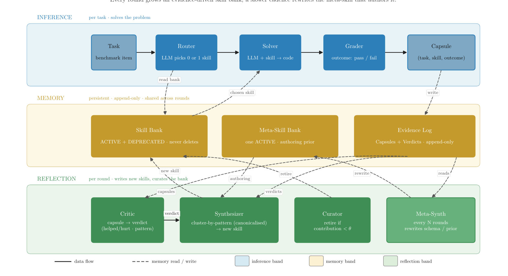
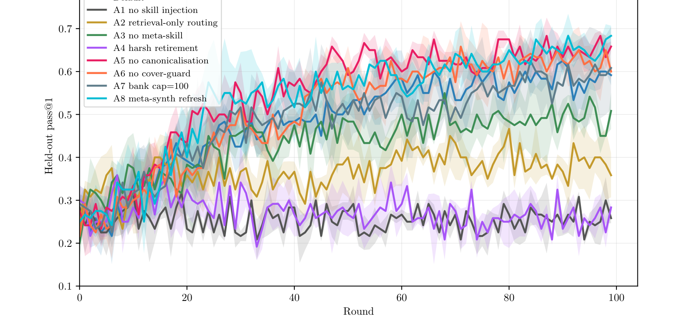

一本越攒越烂的手册不如没有。Ratchet 用一连串消融实验，找出"自动管理"这本手册时真正不能少的几个动作。
让 LLM 把自己的踩坑经验写成可复用的"技能"攒成一个库，听起来很美，但有个反常识的事实：LLM 自己写技能，提升约等于 0；换成人来编同样的库，提升 +16.2 个百分点。
差距不在"谁更会写笔记"，而在"有没有人在管理这个库"——没人管，库会混进坏经验、无节制膨胀，最后比没有还差。Ratchet 把这件事拆成一个个"管理动作"逐一消融，结论是：冻结模型不动，只把"图书管理员"这个角色做扎实，自动管理的库就能追上人工编的水平，把 MBPP+ 难题的 pass@1 从 0.258 推到 0.658。
自进化 agent 的一个朴素想法：让模型每次做完题，把"这类题怎么解、容易踩什么坑"写成一条可复用的技能，攒进一个技能库；下次遇到相似的题，先翻库里有没有现成经验可参考。模型权重不动，靠这本越攒越厚的手册让自己变强。
但对照基准 SkillsBench 给出了一个泼冷水的结果：让 LLM 自己写这些技能，对成绩的贡献是 +0.0pp；而换成人来编一套同样格式的技能库，提升有 +16.2pp。同一个模型、同样的题、同样的"翻手册再解题"流程，唯一的差别是谁在维护这个库。
Ratchet 的诊断是：LLM 写出来的单条技能其实质量不差——给它一个具体失败案例，它能准确说出原因、写出格式清晰的经验。问题不在"写得好不好"，而在"没人管这个库"。库一旦放任自流，就会以三种方式烂掉：
给定一个具体的失败样例，LLM 能：
所以真正的问题被换了一个方向：不是"怎么让 LLM 写出更好的技能"，而是"怎么自动管理这个库，让它别退化"。Ratchet 就是冲着这个问题去的。
Ratchet 的设定很克制：同一个冻结的 LLM 扮演所有角色，不改一丝权重，整个系统的"成长"只发生在外部的库和账本里（用 SQLite 持久化）。它把流程分成三条带子——上面"解题"、中间"存东西"、下面"复盘+管理库"。下图是全貌，看不懂没关系，紧接着用人话拆解每个角色。

六个角色，都是同一个 LLM + 一本库，换个提示词而已
页面后面会反复提到这几个角色。这里给一张"人话对照表"，记住左边的动作名就够了，括号里的英文只是方便对回原文：
Ratchet 按"轮"运行。每一轮先用当前手册做一遍题（这是上报成绩的地方），再专门制造一批失败案例供复盘，然后复盘、写新经验、清理。本轮"管"出来的手册，就是下一轮"用"的手册——这样一圈圈滚下去。点"下一步"跟着走一遍：
拿当前手册在 40 道"考试题"（held-out）上正常做一遍：挑笔记 → 解题 → 判分。这一遍的 pass@1 就是论文上报的成绩。
在另外 60 道"练习题"上跑同一条流程，目的是制造可供分析的失败案例，不上报成绩。
对每条失败记录，让 LLM 以"复盘"身份给一个归因结论：这次用的经验到底起了什么作用。
翻最近 6 轮的复盘结论，把同一个失败花样反复出现 ≥3 次的，照"模板"写成一条新经验入库。
id: boundary_off_by_one 适用场景: 用 range / 切片且涉及端点 关键提示: Python 的 range/切片右端是开区间 常见坑: - 末位是 n 时误写成 range(0, n+1) 返回前检查: 单独验一下 n 这个边界 状态: 在用 (ACTIVE)
用战绩账本给每条"在用"经验算一个战绩分，把长期帮倒忙的下架。这是全文最 load-bearing 的动作。
上面那套"复盘 / 写新经验 / 清理 / 去重 / 容量上限 / 回滚……"看着都挺合理，但哪些是真不能少，哪些其实是摆设？Ratchet 的做法很直接：每次只砍掉一个动作、其余不变，跑 100 轮 × 3 个随机种子，看学习曲线掉多少。衡量用 rolling gain（最后 10 轮均值 − 最前 10 轮均值），比看峰值更稳。

先确认前提：提升真的来自技能吗？
强制每道题都"不挑任何经验"，整个库形同虚设。结果 +0.002——几乎不涨。这条确立了基线：Ratchet 的全部增益确实来自技能这套机制，而不是别的什么。后面所有对比都以此为锚。
三个"砍了就疼"的动作
把退役阈值调狠（试用满 20 次、只要不是正贡献就退），结果 rolling gain 掉到 −0.019，是唯一比"完全没技能"还差的配置。
原因是统计噪声：样本太少时战绩分极不可信——只试 20 次的偏差可能高达 ±0.44，意味着真正有用的好经验，常因为早期几次倒霉失败就被误杀。把门槛提到"满 100 次且战绩分 ≤ −0.10"，才挡住了这种误退役。
启示："自动退役"不是越积极越好。退役决策必须基于足够多的实测战绩，而不是急着清场。
去掉写新经验时附带的那份"模板"（一份 Markdown 写作规范：该写哪些字段、什么风格、禁止空泛建议），rolling gain 从 +0.328 掉到 +0.187，损失 −0.141，是所有单项消融里最大的。
关键洞察：模板不只是"统一格式"。它逼着每条新经验都长得规整、表达同质，顺手就把"同一个坑写出好几条"的重复问题给消化掉了——这一点在下面会再次出现。
"挑笔记"分两步：先按相似度粗筛出几条候选，再让 LLM 读着候选拍板"选哪条、还是干脆不选"。只保留检索、砍掉 LLM 拍板这一步后，只剩 +0.077，约等于完整提升的 1/4。"选不选、选哪条"这个判断，贡献了约 76% 的挑选价值。
一个"砍了反而更好"的反直觉发现
系统本来有两个去重机制：把语义相近的失败花样合并（A5），以及新经验和已有经验太像就跳过（A6）。直觉上这能防止库里堆重复。但把它们分别砍掉，rolling gain 反而略升到 +0.374 / +0.363。
原因正是上面那条："模板"已经让新经验高度同质，本来就没多少真重复可去。这时候显式去重的误伤（把其实有用的细微差别也当成重复给合并/跳过）反而成了净损失。
启示：这些"卫生机制"不是各自独立、越多越好。模板和显式去重在很大程度上是替代关系——有了前者，后者就成了多余。这是消融实验最有价值的结论之一：加机制要看它和已有机制是叠加还是替代。
两个"现在用不上、但别删"的设置
把"在用"经验的上限从 50 翻倍到 100，均值 +0.317 和完整配置差不多——说明当前规模下 50 这个上限并不卡脖子。但方差从 ±0.018 暴涨到 ±0.110：更大的库带来明显的不稳定。而且下一节会看到，这个上限在理论保证里不可或缺——去掉它，"不会越学越差"的保证就崩了。
让"模板"本身也每 10 轮被重写优化一次。峰值确实拉到全场最高 0.725，rolling gain +0.372，但代价是耗时多 55%（10.1 小时 vs 6.5 小时）。所以默认关闭：算力换那点峰值，作者认为不划算。
| 配置 | 起点 (round 0) | 峰值 | rolling gain |
|---|---|---|---|
| Default 完整 | 0.258 ± 0.047 | 0.658 ± 0.042 | +0.328 ± 0.018 |
| A1 不给技能 | 0.283 ± 0.031 | 0.375 ± 0.000 | +0.002 ± 0.005 |
| A2 只检索不拍板 | 0.242 ± 0.012 | 0.492 ± 0.042 | +0.077 ± 0.065 |
| A3 去掉模板 | 0.200 ± 0.035 | 0.592 ± 0.047 | +0.187 ± 0.036 |
| A4 退役太激进 | 0.300 ± 0.035 | 0.433 ± 0.042 | −0.019 ± 0.010 |
| A5 去掉花样合并 | 0.275 ± 0.020 | 0.708 ± 0.012 | +0.374 ± 0.023 |
| A6 去掉相似跳过 | 0.217 ± 0.024 | 0.700 ± 0.035 | +0.363 ± 0.033 |
| A7 上限=100 | 0.292 ± 0.042 | 0.650 ± 0.089 | +0.317 ± 0.110 |
| A8 定期重写模板 | 0.250 ± 0.035 | 0.725 ± 0.020 | +0.372 ± 0.017 |
自进化系统最让人担心的是失控下滑：库越攒越烂，成绩一路滑到谷底。Ratchet 给了一个简单但有用的保证：在几条温和假设下，期望成绩不会比"完全没技能"低过一个有限的差距，不会无限下滑。注意——这叫"非发散"，是"不会变得太差"的下限保证，不是"一定会变好"。
大意：只要 (1) 挑笔记这步本身不乱来、(2) 战绩分是对真实贡献的无偏估计、(3) 退役所需的试用次数足够多（用 Hoeffding 不等式把估计误差压到 ε 以内），那么——
也就是：期望成绩相对"没技能基线"的下滑，被三个量牢牢锁住——退役阈值 τ、估计误差 ε、以及库容量上限 C（δ 是小概率项）。每一项都是有限的，所以总下滑有限。
τ=0.10、试用满 100 次、C=50、δ=10⁻³：
实际系统从没接近过这个下限（真跑出来是 +0.328），但它保证了最坏情况也只是有限损失。
Voyager / ExpeL / AutoManual 这类工作，库可以无限膨胀（C→∞）、也没有像样的退役阈值（τ 无下界）。
代进上面的式子：C→∞ 时下限直接崩到 −∞——也就是理论上允许无限下滑。
最后把全文收成一条线：自进化的瓶颈在"管库"不在"写技能"；管库真正关键的是少数几个互补动作；它们还能给出一个不发散的下限保证。